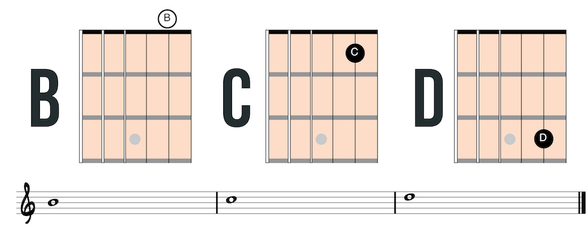
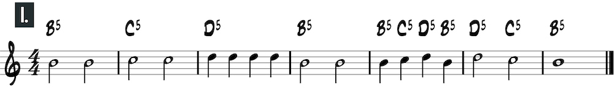
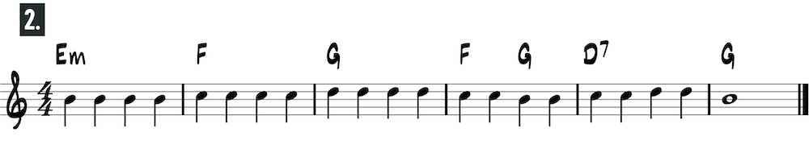
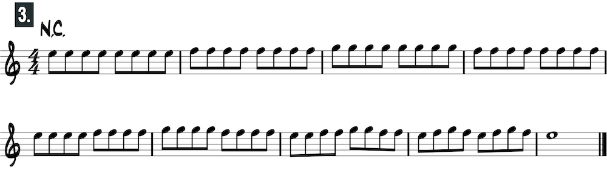
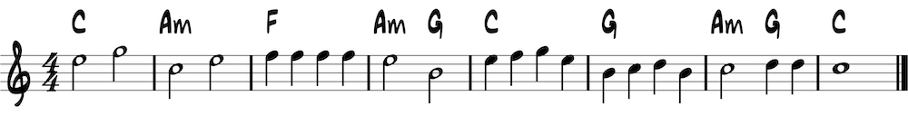
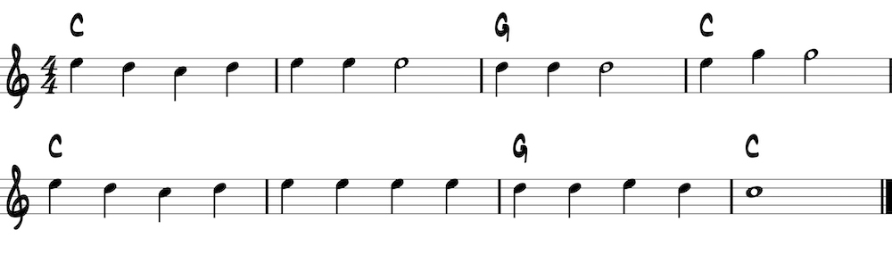
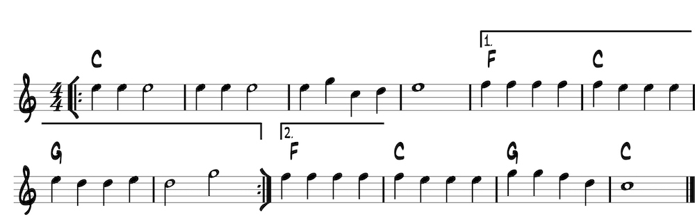

<h1>Second string: open position</h1>
<p>Play C on the first fret with the first finger and D on the third fret with the third finger.</p>

<h2>Second string melodies</h2>




<h2>First and second string melodies</h2>


<h3>Mary Had a Little Lamb</h3>


<h3>Jingle Bells</h3>
